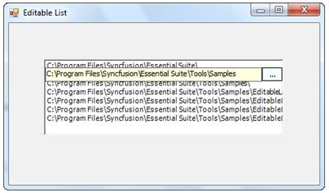
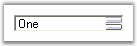
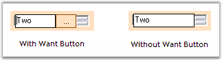
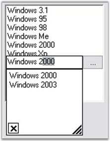

Populate the list
The List can be populated in 2 ways. One is to specify the DataSource and another is to edit the list manually in the property editor.
To populate through DataSource.
|
[C#]
// Specifies the DataSource. editableList1.ListBox.DataSource=<DataSource>; |
|
[VB.NET]
' Specifies the DataSource. editableList1.ListBox.DataSource=<DataSource> |
Otherwise go to the property editor, expand the ListBox property of the EditableList and then select Items. This Items property is editable like any other Items property.
Editing the list
The List can be edited in the following way during runtime:
1. Select the Item you want to edit by clicking or by using keyboard.
2. Click again. There appears a TextBox. Now edit the text.
3. After editing change the focus, the list will get updated.

Figure 523: Editing the List
This section discusses the complete Appearance and behavior settings of EditableList control.
Embedded controls
EditableList control contains embedded controls such as Button, TextBox and ListBox.
|
EditableList Embedded controls |
Description |
|
Button |
It includes the properties and events present in the windows Button. |
|
TextBox |
It includes the properties and events present in the windows TextBox. |
|
ListBox |
The listbox property of editable list, expands and allows the user to set various appearance and behavior properties of the EditableList. |
Auto Scrolling
You can enable scrollbars automatically for the EditableList control when its items are shown beyond its size by setting AutoScroll to true. When AutoScroll is enabled for the control, you can set the margin and logical size for the autoscroll region by AutoScrollMargin and AutoScrollMinSize properties.
|
EditableList Properties |
Description |
|
AutoScroll |
It indicates whether Scrollbars will automatically appear if controls are placed outside the form's client area. |
|
AutoScrollMargin |
It sets margin around the controls during AutoScroll. |
|
AutoScrollMinSize |
It sets the minimum logical size for the AutoScroll region. |
|
[C#]
this.editableList1.AutoScroll = true; this.editableList1.AutoScrollMargin = new System.Drawing.Size(2, 2); this.editableList1.AutoScrollMinSize = new System.Drawing.Size(3, 3); |
|
[VB.NET]
Me.editableList1.AutoScroll = True Me.editableList1.AutoScrollMargin = New System.Drawing.Size(2, 2) Me.editableList1.AutoScrollMinSize = New System.Drawing.Size(3, 3) |
Dock padding
Dock padding determines the size of the border for the docked controls.
|
EditableList Property |
Description |
|
DockPadding |
Gets the dock padding for all edges of the control. |
The following image displays the EditableList control with the dock padding for all the edges set to 5.

Figure 524: DockPadding.All set to 5
|
[C#]
this.editableList1.DockPadding.All = 5; |
|
[VB.NET]
Me.editableList1.DockPadding.All = 5 |
Want Button
You can display the button to the right while editing the items in the EditableList control by setting WantButton to true.
|
EditableList Property |
Description |
|
WantButton |
Specifies whether to show button to the right while editing. |

Figure 525: Want Button
|
[C#]
this.editableList1.WantButton = true; |
|
[VB.NET]
Me.editableList1..WantButton = True |
We can associate an AutoComplete with the editing TextBox of the EditableList. The following steps help to achieve this.
1. Create an instance of the AutoComplete.
2. In the Form load event, place this code.
|
[C#]
private void form1_Load(object sender,EventArgs e) { // Sets the AutoComplete. autoComplete1.DataSource=editableList1.ListBox.Items; autoComplete1.SetAutoComplete(editableList1.TextBox,AutoCompleteModes.Both); } |
|
[VB.NET]
Private Sub form1_Load(ByVal sender As Object, ByVal e As EventArgs) ' Sets the AutoComplete. autoComplete1.DataDource=editableList1.ListBox.Items autoComplete1.SetAutoComplete(editableList1.TextBox,AutoCompleteModes.Both) End Sub |
The data source may vary according to your choice.

Figure 526: EditableList With AutoCompletion Capability